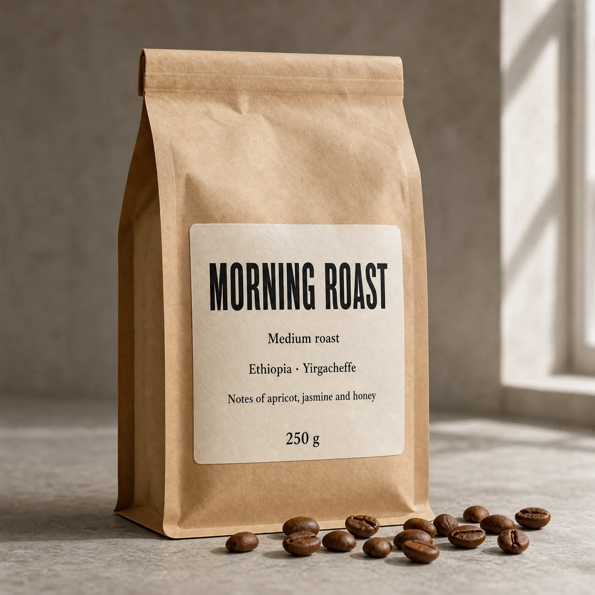
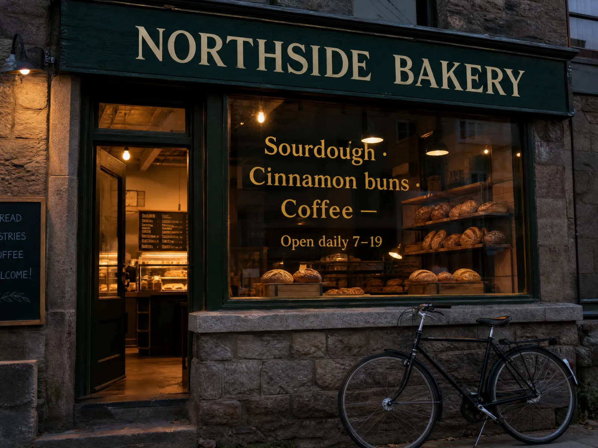
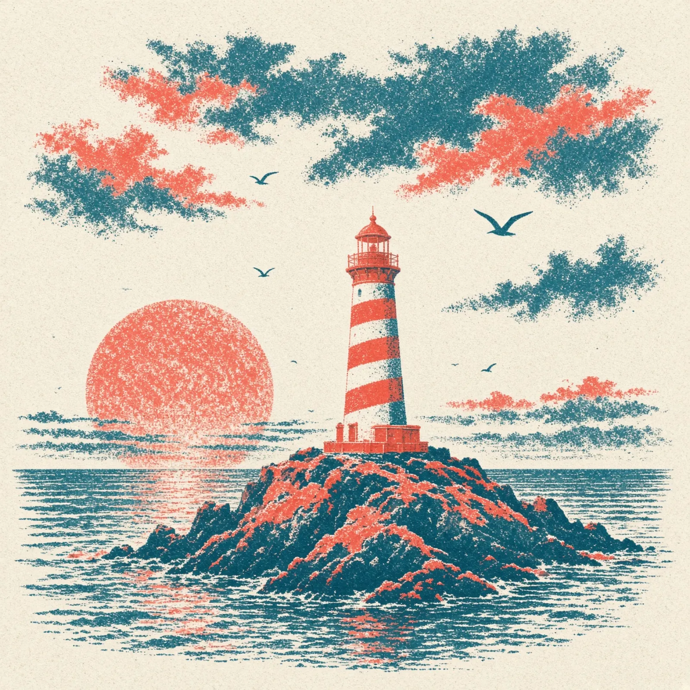
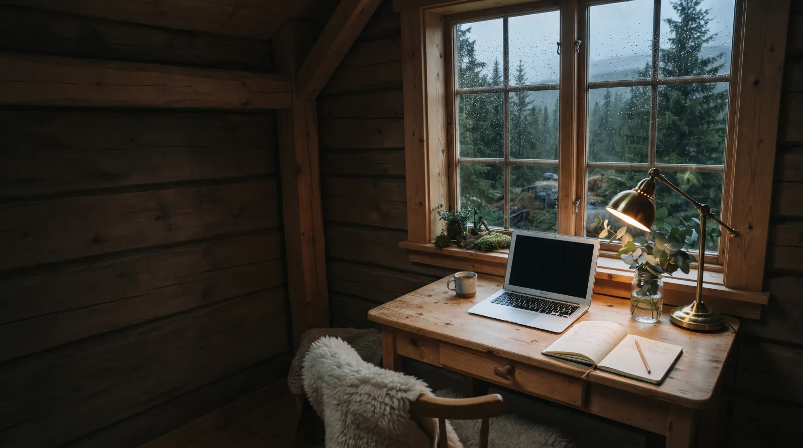
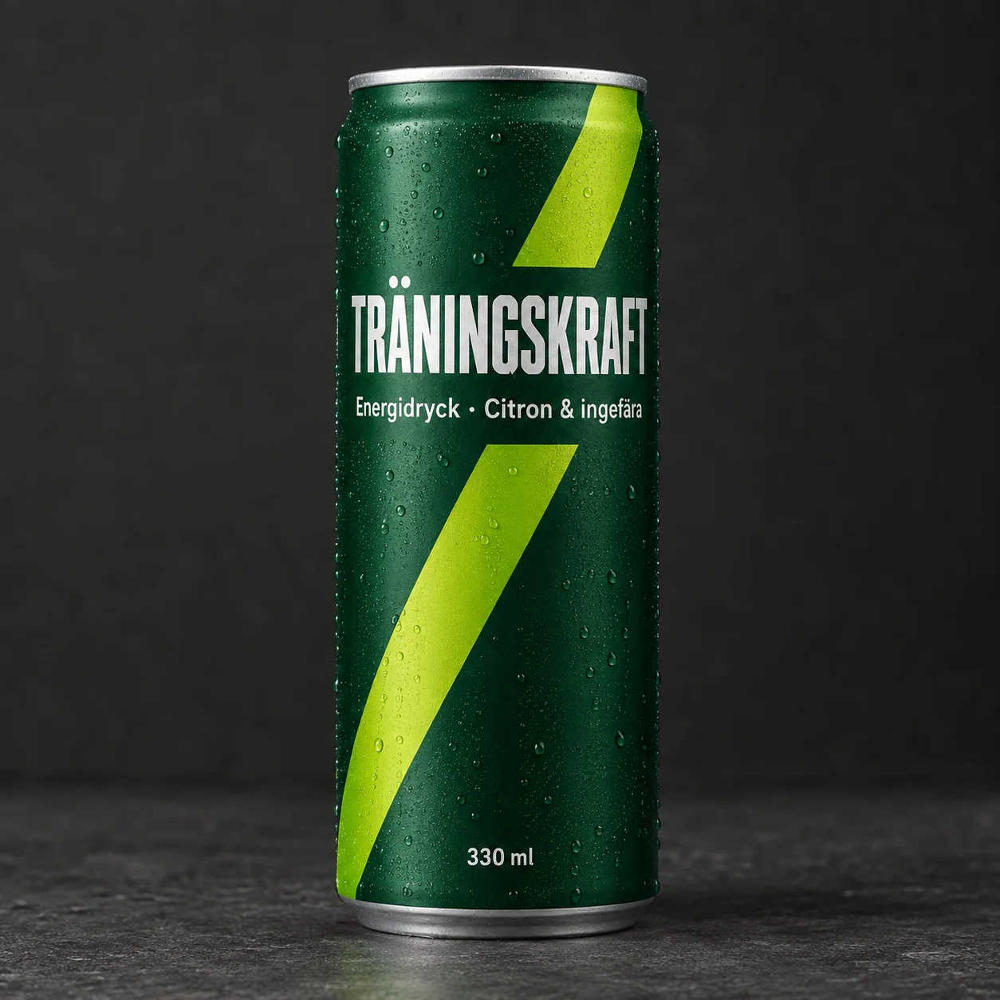
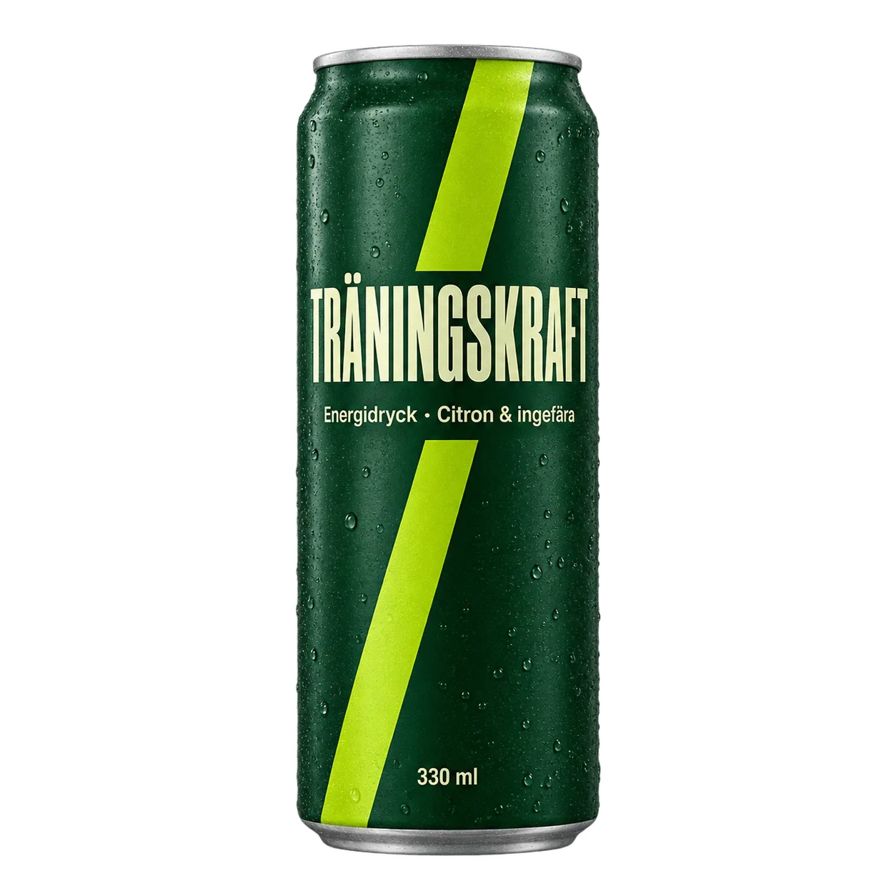

What the models made
Nine images and one clip, each from a single run of the models and providers the skill calls. Beneath each one: the model, the size, what it cost, and the prompt.
PromptProduct photograph of a handmade stoneware coffee cup with a speckled oatmeal glaze and an uneven rim, standing on a pale wooden windowsill…

PromptStudio product photograph of a matte kraft-paper coffee bag… A cream paper label on the front, printed in black, reads exactly, line by line: MORNING ROAST…
PromptVertical outdoor photograph for a social media story: worn leather hiking boots resting on a granite ledge…

PromptStreet photograph of a small neighbourhood bakery storefront at dusk… a hand-painted wooden sign… reads exactly: NORTHSIDE BAKERY…

PromptRisograph print illustration of a small red-and-white lighthouse on a rocky island at dusk… fluorescent coral and deep teal…

PromptWide editorial blog header photograph: a small pine desk under the window of a Nordic cabin on a rainy afternoon…
Run by the skill itself: fine lettering, then no background

PromptStudio product photograph of a single slim aluminium energy drink can standing upright on a dark grey concrete surface… Printed on the can, reads exactly, top to bottom: TRÄNINGSKRAFT… then Energidryck · Citron & ingefära, then at the bottom 330 ml…

PromptStudio product photograph of a single slim aluminium energy drink can standing upright, soft light from the left, isolated on a transparent background with no floor, no surface and no shadow…
Made with the skill's own recipe, straight from Kie. Sunburst is the slower variant of GPT Image 2.5, for when fine detail carries the picture. Each can took about a minute, and every letter, ä included, came back as asked. No. 10 asked for a transparent background and arrived as a cut-out PNG; the yellow behind it is this page, not the picture.
An edit, and a clip from the same cup
GivenNo. 1, as the reference image
PromptEdit this image. Replace the window, the birch trees and the wooden windowsill with a bright seamless studio backdrop in pale sage green… Keep everything else exactly as it is…
PromptSlow gentle push-in on the stoneware cup; the wisp of steam curls and drifts upward…
Nano Banana 2
The default. Photos, scenes, products, and editing a picture you already have.
GPT Image 2.5
When words inside the image must be readable, and for careful edits. No. 7 is 2.5, Nos. 9 and 10 its slower Sunburst variant; Nos. 3 and 4 were made with 2, its predecessor.
Grok Imagine 2.0
The cheapest, with a looser, stylised hand.
Kling 3.0
The default for video. Animates a still you like, 3–15 seconds, sound optional.
MiniMax H3
Cheap clips at 480p, and the only one that can repeat a take with a seed.
Grok Video · Seedance 2.5
Grok keeps a person recognisable from photos. Seedance for hero shots up to 30 seconds, at a price.
Install the skill
A key from Kie AI or fal.ai in your shell, and the skill folder linked into your agent. You pay the providers directly; nothing goes through ContentCoach.
Short version: give this to your agent
Install the ContentCoach skill from https://github.com/santoso-git/contentcoach-skill: clone it to ~/.contentcoach-skill and link its contentcoach folder into your skills folder. Then check whether KIE_API_KEY or FAL_KEY is set in my shell, without showing the value. If neither is, tell me where to create one and how to add it to my shell profile. Never ask me to paste a key into the chat.
Paste it into Claude Code, Cursor or Codex. It installs the skill and checks for a key; the steps below do the same by hand.
Get a key and put it in your shell
Create one at Kie AI, the cheapest for nearly every model, or at fal.ai, and top up a little credit. One is enough; with both, the skill falls back from one to the other. Add the lines for the keys you have to ~/.zshrc on a Mac or ~/.bashrc on Linux, never to a project or git, then open a new terminal and restart your editor.
export KIE_API_KEY="your-kie-key"
export FAL_KEY="your-fal-key"Tick your agent
# Cursor reads skills from ~/.cursor/skills
git clone --depth 1 https://github.com/santoso-git/contentcoach-skill ~/.contentcoach-skill
mkdir -p ~/.cursor/skills && ln -s ~/.contentcoach-skill/contentcoach ~/.cursor/skills/contentcoach Restart Cursor. The skill is used in Agent mode. To update, run git -C ~/.contentcoach-skill pull.
Ask for a picture or a clip
Make a 16:9 blog header about remote work: a small desk in a Nordic cabin, rain outside.
Animate that image: a slow push-in, rain running down the window. Five seconds.
Put our logo from logo.png on a square post announcing the autumn menu, with the words "Autumn menu" readable.
Build a landing page for my bakery with your design skill, and make the hero image and three product shots for it with ContentCoach.
Before a clip, or anything at 2K or 4K, the skill tells you the model, the provider and the price, and waits for your yes. Everything lands in generations/ in your open project, next to a .json that records the prompt, the model and the cost.
How the skill behaves
Printed on the back of the envelope, so nobody is surprised.
Instead of a generation app
No subscription to Higgsfield, Runway or a similar app. The skill runs the same kind of models through your own Kie AI or fal.ai account, and you pay per image or clip at the provider's price.
Alongside your other skills
Your agent can use it in the same task as its other skills. A design skill builds a landing page, and this one makes the hero image, the product shots and a short clip for it, saved straight into the project.
Kept up to date
Models and prices change every month. When a provider renames a model or changes a field or a price, the recipe is fixed, and new models get a recipe of their own as they come out. Run git -C ~/.contentcoach-skill pull to get them; the no-install route always reads the latest.
Your own key
The skill calls Kie AI and fal.ai directly with a key you create there, and you pay them at their own prices. Nothing goes through ContentCoach, and nobody hands out keys.
Video is quoted first
A clip costs roughly ten times an image. The skill shows you the model, provider, length, resolution and price before every clip, and runs only on your yes. One yes covers one run.
Cheapest route first
With a Kie key the skill starts there, since it is the cheaper provider for nearly every model, and falls back to fal. It always says which provider ran and what it cost.
Drafts first
Everything is made at 1K unless you ask. Ask for 2K or 4K once you have a favourite.
Real files, not descriptions
For a logo, a product or a face, give the agent the file. A logo described in words comes back wrong every time.
Where your data goes
Prompts and reference images go straight from your machine to Kie AI or fal.ai, under your own account. For Kie, reference images are uploaded to its temporary file storage, which deletes them after about a day; fal receives them inline. Result links expire within hours, so the skill downloads them straight away.